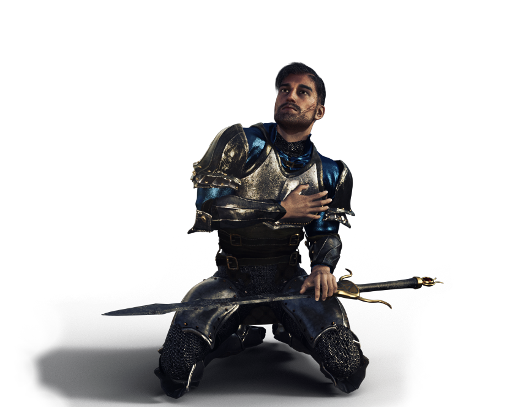
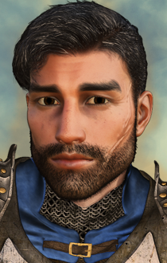

Brage's Redemption - Brage NPC for the whole Baldur's Gate Epic
A Kerzenburgforum Modification
Author: jastey
Portrait Artist: Acifer
Languages: German, English, Italian
Platform: Windows, OSX, Linux
Brage's Redemption is a Quest Mod for BG1 and an NPC Mod for the whole Baldur's Gate Epic. It is natively compatible with BG:EE, SoD, BGII, BGT, BGII:EE, EET. No Tutu.

Content
NOTE: If you've previously installed the mod, remove it before extracting a new version. To do this, uninstall all previously installed components and delete the mod folder and executables.
Make sure the game is not running while installing the mod.
When installing or uninstalling, do not close the DOS window by clicking on the X button! Instead, press the Enter key when instructed to do so.
If you use SoD from GOG or Steam, you need to prepare your game with DLC Merger or modmerge before installing any mods:
argent77's DLC Merger
modmerge(if in doubt, use the DLC Merger instead)
For Enhanced Edition it is important that you istall the mod to the language version you are playing the game in. Otherwise, the dialogues of the mod will not show but give error messages.
The EE games are actively supported games. Please note that every patch update will wipe your current mod setup! If in the middle of a modded game you might want to delay the patch update as even after reinstalling the mods, you might not be able to continue with your old savegames.
Extract the contents of the mod archive to your game's main directory (BG:EE/SOD/BG2/BGT/BGII:EE/EET). On successful extraction, there should be an c#brage folder and a setup-c#brage.exe file in your game folder. To install, simply double-click setup-c#brage.exe and follow the instructions on screen.
Run setup-c#brage.exe in your game folder to reinstall, uninstall or otherwise change components.
Brage's Redemption mod is packaged and installed with WeiDU. To install, extract the mod archive, then copy of the contents of the folder into your game folder (the folder which contains the CHITIN.KEY file). If properly extracted, you should have a "c#brage" folder, setup-c#brage, and setup-c#brage.command in your game folder. To install, simply double-click setup-c#brage.command and follow the instructions on screen.
Extract the contents of the mod to the folder of the game you wish to modify. Download the latest version of WeiDU for Linux from https://github.com/WeiDUorg/weidu/releases and copy WeiDU and WeInstall to /usr/bin. Following that, open a terminal and cd to your BG2 installation directory, run 'tolower' and answer Y to both queries. You can avoid running the second option (linux.ini) if you've already ran it once in the same directory. If you're unsure, running tolower and choosing both options is the safe bet.
Run WeInstall c#brage in your game folder to install the mod. Then run wine BGMain.exe and start playing.
Brage's Redemption was implemented with WeiDU with highest priority to compatibility with other mods. However, the BG1 quest should be installed before the BG1NPC Project so no added reply options will be overwritten. For this, either install the mod's main component before BG1NPC Project. You also have the possibility to install the beginnings quest via the
Baldur's Gate Mini Quests and Encounters Mod (bgqe, component "Brage's Sword") If the quest was installed via bgqe, it will be detected accordingly when installing Brage's Redemption Mod.
The Crossmod component should be installed after all other mods so the crossmod content gets installed. List of mods with crossmod for v9.0: AC_QUEST, AjantisBG1, AjantisBG2, BG1NPC, bg1re, bg1ub, bgqe, bst, c#sodboabri, c#endlessbg1, EET, FinchNPC, imoen4ever, ntotsc, sotsc, transitions. Crossmod with Thalantyr's Item Upgrade is included into the Crossmod component but independent on install order.
Note that the install order syntax for Project Infinity only contains the crucial dependncies for the main mod component. Make sure to install the crossmod component late enough so all crossmod will be included.
Please note: For Brage to react to game events in SoD accordingly, the main component (Tracking System, 2nd component) of "Road to Discovery" needs to be included in your install (independent of install order).
The mod introduces a quest extention to the Brage quest in the game (BG1). Brage is the captain of the Nashkel guard and went missing after killing his family. The quest extention to prove his innocence is also published as the component "Brage's Sword" in the mod
bgqe. Brage's Redemption inserts this quest in case bgqe is not installed as well, and will expand the quest "Brage's Sword" to make it more convenient (addd journal entries etc.)
To gain Brage as a joinable NPC, the PC needs to prove his innocence as well as give him back his real sword. After leaving the temple once after that, Brage can be visited inside the temple of Helm in Nashkel and will offer to join the PC.
The quest to make Brage a joinable NPC can be completed before clearing the Nashkel mines. See the spoiler section for information.
As a second, optional component, the mod's portrait and soundset can be assigned to the original game Brage, as well. This will not change his very first line if met while he is still under the influence of the curse.
The third, optional component gives Brage his special two-handed sword +1 instead of the generic one. This is of interest if you also install tweak mods that change the general two-handed weapons in the game (e.g. the component from SCS that also makes +1 weapons in BG1 breakable). In this case, Brage's sword is then exempt from this. NOTE: Due to the unique sword being a copy of the generic one upon the time of install, this will only be the case if the tweaks are installed AFTER installing the content from the "Barge's Sword" quest AND if the tweak mod(s) do not alter unique mod items.
The fourth component contains the crossmod content. The installation order in c#brage.ini refers to this component: install it after all other quest and NPC mods.
This content gives the player the possibility to prove that Brage fell victim to an intrigue and save him from a death by the gallows - if the PC wants to. There is an evil quest option, which will bring Brage to the gallows (i.e. he will be gone from the game). In this case, he will not be available as a joinable NPC.
Brage has to be brought to Nashkel alive. The mod also adds the possibility to bring him to Oublek (i.e. the Nashkel authorities) instead of to the temple. This was unfinished original game content. (For this possibility, please note the install order as mentioned above).
Please note: For Brage to react to game events in SoD accordingly, the main component (Tracking System, 2nd component) of "Road to Discovery" needs to be included in your install (independent of install order).
BG1:
After proving his innocence, bringing him his sword, and leaving the temple once - representing the time that passes so Brage can come to terms with what happened - Brage will ask to join the PC's group to both repay them and also to be part of bringing the culprits of the intrigue to justice. He doesn't have to be accepted right away but can also be recruited later.
The BG1 part contains a friendship path with 11 dialogues, dealing with Brage's guilt and the loss of his family. The friendship path is best suited for a caring, friendly PC. Brage banters with some of the BioWare NPCs. As of version Beta 1, the mod includes banters for Brage with the following NPCs: Ajantis, Eldoth, Garrick, Imoen, Minsc & Dynaheir, Montaron, Viconia, Xzar, Yeslick. There are dialogues with interjections of Edwin, Jaheira, and Khalid, also. Brage reacts to the main game events. He has a lot of interjections in Nashkel as he is well-known in the town. As of version Beta 1, there are no other interjections to game events. Brage has s small player initiated dialogue (PID) which will not be updated throughout BG1.
To experience all banters with Eldoth and Viconia, most cursed items should be identified and placed in the group's inventory.
After 2/3 of the friendship path, Brage will tell that he wants to visit his family's grave in Nashkel. The PC does not have to be with him while it happens, but more content will be witnessed if they do (otherwise, Brage will talk about it upon rejoining).
SoD:
As of version 9, SoD content is completed. Brage can be found in the Sorcerous Sundries either if he was in party in BG1 or if it is a new SoD game.
BGII:
There is no official BGII content yet. There exists some BGII content only available in English:
Brage will be inside the temple of Helm in the Temple's District after the PC received the quest for the Unseeing Eye from one of the temples. The quest has to be accepted for Brage to spawn. After that, he can be taken into the group.
In ToB, Brage can be summoned via the Fate spirit if he is not in party upon the transition from SoA.
As of version Beta 1, Brage has banters with Anomen and Nalia.
When first met, he will be a third level fighter with two pips in two-handed sword, two pips in crossbow, and one pip in two-handed fighting style. Brage will level up upon first joining when the PC's HP are higher than his. This will also happen in a continuous game upon rejoining after game-related times of separation at the beginning or SoD, SoA, and if summoned in ToB via the fate spirit.
Brage's alignment was changed to Lawful Neutral. (The original game cre had Chaotic Neutral which I think was meant to be due to the berserker rage he is in when met.)
His stats where taken from the original BG1 creature file:
- STR: 18/23
- DEX: 11
- CON: 17
- INT: 12
- WIS: 8
- CHA: 13
Brage uses the according language soundsets "HoW_Male_2" from IWD:TotLM, for both the English and the German versions. The English soundset is used for any other language versions that do not have an own one.
Brage's portrait was generously created and provided by Acifer.

***** Spoiler for the BG1 Beginnings Quest *****
The merchant Borda (original game content) plays a role in this quest. Originally, he can be met in the area with the Xvart village. Depending on quest status the PC can confront him here. If he was already met, there will be a second meeting.
Brage's cursed sword plays a role, as well. It has to be presented to Nalin at some point. After that, it is no longer needed for this mod (and can e.g. be used for Thalantyr's Item Upgrade Mod).
The quest can be solved completely before clearing the Nashkel mines but it can also be solved later.
For the quickest way of solving the quest (especially before going into the mines), the walkthrough is as follows:
- On the map with the Xvart village, talk to the merchant Borda. For the quickest way, you can confront him and kill him to get the needed note and Brage's real sword. This is not necessary to solve the quest before the Nashkel mines, though.
- Go to Brage. If Borda is not killed, let Laryssa live to be able to solve the quest before clearing the Nashkel mines. Bring Brage to Nashkel alive (either to the temple or to Oublek does not matter)
- Talk to Oublek and receive the quest "Captain Brage's Guilt".
- Show the cursed two-handed sword to priest Nalin in Nashkel temple to prove it is cursed.
- If Borda was not killed yet, meet Laryssa outside the temple and receive a clue about a merchant at the Nashkel Carnival. He is located in the tent far south.
- Tell Oublek about the cursed sword.
- If Borda is still alive, go to the potions merchant at the Nashkel Carnival (far south tent) and confront him with the accusations until he tells where to meet Borda.
- Search for Borda. If not met yet, he will be in the area with the Xvart village. If already met there, go into the Lotus tent in the far west of the Carnival once. Upon leaving the tent, Borda will confront the group. Take the letter and the sword after defeating him.
- Give Oublek the letter to prove Brage's innocence.
- Talk to Oublek again to trigger the Brage's trial cutscene.
- After clearing his name, Brage will be inside the temple in Nashkel. Persuade him to take his real sword.
- After Brage took his sword and the PC left the temple once and returns, Nalin will address the PC that Brage wants to speak with them. Brage will ask to join and can be taken into the group.
Note: For the case that the merchant Borda was not killed upon the first meeting but Laryssa, Brage's cousin, was killed upon the first confrontation, the last needed quest clue will be found no sooner than Tazok's tent in the bandits' camp.
Acifer: Portrait and promotion picture, ideas, D&D knowledge. Thank you for the beautiful pictures, working on this mod was a lot of (even more) fun because of those!
Lumorus: ideas. Thank you for the idea of making Brage an NPC and pointing out that he is from Amn (which makes meeting him in BGII so much more natural.) Without it I would not have started working on this mod!
Shai Hulud: German translator.
Italian Translation by Coland, proofread by Colmar.
Thanks to BioWare, Black Isle and Wizards of the Coast for Baldur's Gate 1, 2 and the Infinity Engine, and BeamDog for the revival of the games including the SoD campaign.
Thanks to Kerzenburgforum for hosting the mod and giving a place for exchange of ideas.
Thanks to all modders who developed and are maintaining the IE modding tools, without which this mod would not have been possible.
Thanks to all who play this mod or any of my mods, and also those of you who give feedback to help improving my mods. Modding would not be as much fun without you.
This mod is unofficial Fan Content permitted under the Fan Content Policy. Not approved/endorsed by Wizards. Portions of the materials used are property of Wizards of the Coast. ©Wizards of the Coast LLC.
This mod is also not developed, supported, or endorsed by BioWare, Black Isle Studios, Interplay Entertainment Corp., Overhaul Games or Beamdog. All other trademarks and copyrights are property of their respective owners.
Version 9.1:
- Journal entries when receiving the quest items from Borda should be written into journal.
- Crossmod with SotSC added: crying woman in Nashkel mine area.
Version 9.0:
- German version completed, by Shai Hulud, proofread by jastey.
- New component: "Give Brage unique Two-Handed Sword +1" (for BG1 part only).
- Brage's comment on being arrested should fire not too early.
- "Brage's Sword": updated to version in bgqe 26.1 (Laryssa should spawn after showing the sword to Nalin if Borda is not dead, too.)
- Crossmod with Thanalntyr's Item Upgrade mod is now independent on install order.
- Install order syntax was nerfed in the .ini to lift restrictions for the main component. Make sure to install the crossmod component after all other relevant mods according to readme.
- the file c#brage0.cre will no longer clatter the override folder.
- small text correction.
Version 8.2:
- Brage's comment on being arrested should fire and not loop.
- Ramazith should notice if Abela is lost and not be available for Brage's sword questions.
- Refined triggers for BG1 banters with Ajantis.
- Crossmod with Ascalon's Questpack "Serpents of Abbathor": Emerson should not mention CHARNAME's group twice if he notices Brage, Brage's comment should not loop.
Version 8.1:
- Corrected wrong text format for German version.
- Fixed install error for crossmod with bg1ub (BGT).
Version 8.0:
- SoD content completed.
- More content for BG1 (reactions to Albert and Roofie, quest path with sword inquiries, more dialogues, more crossmod).
- "Brage's Sword": updated to version in bgqe 25.6 (optimized Laryssa's spawning and added check whether she's dead; made check whether Borda was met in AR4700.are more stable; letter and sword should not be stealable from Borda).
- HP in cre file reduced to 30.
Version 7.2:
- Larissa should not spawn twice. ("Brage's Sword" quest.).
- SoD: interjection into BDHESTER 5 changed to I_C_T.
- Fixed install error if EndlessBG1 is not installed.
Version 7.1:
- Adjusted check for EndlessBG1 so it doesn't try to install crossmod for Transitions mod.
Version 7:
- Added farewell interjection before transition to main SoD campaign.
- Minor internal restructuring, optimized detection of campaigns and how Korlasz' Dungeon is treated.
- Improved Crossmod for EndlessBG1 mod: Brage should say his Farewell lines in BG1.
- Corrected Crossmod for Transitions mod: Brage should not say his SoD-Farewell lines in BG1.
- Improved Compatibility with EndlessBG1 and Transitions mod: Korlasz' Dungeon is treated as being in BG1 scripting wise.
- Mod should install on bg2ee and BGII games without error.
- Typo corrections (German).
- Crossmod was splitted into own component.
- Added globally unique LABELs to support Project Infinity.
Version 6.2:
- Corrected text formatting upon installation on EE (mod should not stop EE game from launching) introduced in 6.1 for German+Italian versions.
- Corrected general file formatting for some Italian tras.
- Restructured mod installation (check file for "do only once" actions).
- One more interjection for BG1.
- more BG1 content.
- All lines from tp2 trified.
Version 6.1:
- Italian translation finished by Coland.
- German translation finished.
- Corrected install error of crossmod with BST.
Version 6:
- Corrected Brage's kickout dialgue in BG1 (BGT).
- Added check to forbit install after EET_End.
- Added Brage to bddialog and bdbanter for EET.
- Corrected Brage's assigned banter dlg for SoD.
- Corrected Imoen DV in bdbanter for SoD.
- Corrected Brage's appearance in bd0121.
- Comment upon entering Avernus is now added to end of bd4400.bcs instead of top.
- Added crossmod scripts for Transitions Mod to Brage's SoD script, too, and fixed triggers for direct EET transition.
- Line in tp2 for bgqe "Nashkel Monster" now traified.
- New crossmod added: bg1re "Necromancer's Trouble", Balduran's Seatower, Northern Tales of the Sword Coast.
- More BG1 reacions (Bassilus, Jardak & Delrik in BG city).
- Reaction to cleared bandit camp revised.
- Brage will not complain about HC entering Manor Hause in Nashkel if it was opened by Megan from DSotSC.
- Corrected patching of Sendai from BG1 for BGT/Tutu/EET.
- Corrected install of kickout dialogue for BG:EE (without SoD).
- More SoD reactions.
- corrected cpmvars.tpa entries for "Beregost_House08_L2"
- Typo corrections.
Version 5:
- Italian version by Coland, proofread by Colmar.
- Revised kickout dialogue.
- Patching of "Brage's Sword" quest from bgqe on EET should work always.
- Added basic SoD content.
- Compatibility with Transitions Mod added.
Version 4:
- Brage's Sword Quest: Oublek should take Borda's Letter if shown as evidence.
- Brage should have kickout dialogue in BGII.
Version 3:
- English version proof read by Athies.
- Renamed readme to readme.brage.%LANGUAGE%.html
- Installation instructions in German readme translated.
Version 2:
- compatibility with Endless BG1 Mod added: for EE + EBG1, Brage will wait with his final Sarevok speech until after Sarevok is dead (always for BGT).
- (BGII) added a second comment if Brage wields Lilarcor for some time
- (BG1) Brage's comment to Bhaal heritage should not repeat after Tamoko dialogue.
- (BG1) Brage's comment to Bhaal heritage will fire after bg1npc "letter dialogue" (if bg1npc is installed) or after leaving the 5th level of the library.
- added c#brage.ini with mod info.
- added folder libiconv-1.9.2-1-src.7z with iconv licence info
Version 1:
- German version completed
- typo corrections
- small changes in dialogues
- Kickout in BGII should not give BG1 dialogue
- added folder libiconv-1.9.2-1-src.7z with iconv licence info
Version Beta 4:
- (BGT) erase all journal entries after transition to BGII
- Improved fight for Borda the merchant of cursed items (by Acifer)
- second component now assigns the mod's soundset to the original game cre, as well (except the very first greetings dialogue if met the first time)
- added info to readmes about the second component
- crossmod to bgqe added (Nashkel Monster, Family Quest, Babysitting, Noober, Fallen Paladin)
- carnival dialogue triggers for BGT
- Bhaaltalk will not stutter
Version Beta 3:
- Installation after bgqe should work in all cases now.
Version Beta 2:
- Soldier Hick inside the barracks should no longer approach the PC if Brage was brought in.
- If Brage was brought to the temple, Nalin will give a hint that the PC should talk to Oublek to proceed.
- If Brage was brought to Oublek, he will initiate dialogue to proceed the quest.
- After Brage accepted his real sword, there is no timer. The PC needs to leave the temple once. Upon return, Brage will ask to join the group.
Version Beta 1:
- First public release with BG1 content.